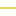

<!doctype html>
<html lang="en">
    <head>
        <meta charset="utf-8">
        <base href="./qgis_sibay_career/"/>
        <meta http-equiv="X-UA-Compatible" content="IE=edge">
        <meta name="viewport" content="initial-scale=1,user-scalable=no,maximum-scale=1,width=device-width">
        <meta name="mobile-web-app-capable" content="yes">
        <meta name="apple-mobile-web-app-capable" content="yes">
        <link rel="stylesheet" href="css/leaflet.css">
        <link rel="stylesheet" href="css/qgis2web.css"><link rel="stylesheet" href="css/fontawesome-all.min.css">
        <style>
        html, body, #map {
            width: 100%;
            height: 100%;
            padding: 0;
            margin: 0;
        }
        </style>
        <title></title>
    </head>
    <body>
        <div id="map">
        </div>
        <script src="js/qgis2web_expressions.js"></script>
        <script src="js/leaflet.js"></script>
        <script src="js/leaflet.rotatedMarker.js"></script>
        <script src="js/leaflet.pattern.js"></script>
        <script src="js/leaflet-hash.js"></script>
        <script src="js/Autolinker.min.js"></script>
        <script src="js/rbush.min.js"></script>
        <script src="js/labelgun.min.js"></script>
        <script src="js/labels.js"></script>
        <script src="data/_1.js"></script>
        <script src="data/_2.js"></script>
        <script src="data/_3.js"></script>
        <script src="data/_4.js"></script>
        <script src="data/_5.js"></script>
        <script src="data/_6.js"></script>
        <script>
        var map = L.map('map', {
            zoomControl:true, maxZoom:17, minZoom:13
        }).fitBounds([[52.67861745139461,58.57874193245303],[52.735337330810644,58.69764493983668]]);
        var hash = new L.Hash(map);
        map.attributionControl.setPrefix('<a href="https://github.com/tomchadwin/qgis2web" target="_blank">qgis2web</a> &middot; <a href="https://leafletjs.com" title="A JS library for interactive maps">Leaflet</a> &middot; <a href="https://qgis.org">QGIS</a>');
        var autolinker = new Autolinker({truncate: {length: 30, location: 'smart'}});
        var bounds_group = new L.featureGroup([]);
        function setBounds() {
        }
        map.createPane('pane_OSMStandard_0');
        map.getPane('pane_OSMStandard_0').style.zIndex = 400;
        var layer_OSMStandard_0 = L.tileLayer('http://tile.openstreetmap.org/{z}/{x}/{y}.png', {
            pane: 'pane_OSMStandard_0',
            opacity: 1.0,
            attribution: '<a href="https://www.openstreetmap.org/copyright">© OpenStreetMap contributors, CC-BY-SA</a>',
            minZoom: 13,
            maxZoom: 17,
            minNativeZoom: 0,
            maxNativeZoom: 19
        });
        layer_OSMStandard_0;
        map.addLayer(layer_OSMStandard_0);
        function pop__1(feature, layer) {
            var popupContent = '<table>\
                    <tr>\
                        <td colspan="2">' + (feature.properties['name'] !== null ? autolinker.link(feature.properties['name'].toLocaleString()) : '') + '</td>\
                    </tr>\
                </table>';
            layer.bindPopup(popupContent, {maxHeight: 400});
        }

        function style__1_0() {
            return {
                pane: 'pane__1',
                stroke: false, 
                fill: true,
                fillOpacity: 1,
                fillColor: 'rgba(235,196,229,1.0)',
                interactive: true,
            }
        }
        map.createPane('pane__1');
        map.getPane('pane__1').style.zIndex = 401;
        map.getPane('pane__1').style['mix-blend-mode'] = 'normal';
        var layer__1 = new L.geoJson(json__1, {
            attribution: '',
            interactive: true,
            dataVar: 'json__1',
            layerName: 'layer__1',
            pane: 'pane__1',
            onEachFeature: pop__1,
            style: style__1_0,
        });
        bounds_group.addLayer(layer__1);
        map.addLayer(layer__1);
        function pop__2(feature, layer) {
            var popupContent = '<table>\
                    <tr>\
                        <td colspan="2">' + (feature.properties['name'] !== null ? autolinker.link(feature.properties['name'].toLocaleString()) : '') + '</td>\
                    </tr>\
                    <tr>\
                        <td colspan="2">' + (feature.properties['description'] !== null ? autolinker.link(feature.properties['description'].toLocaleString()) : '') + '</td>\
                    </tr>\
                </table>';
            layer.bindPopup(popupContent, {maxHeight: 400});
        }

        function style__2_0() {
            return {
                pane: 'pane__2',
                stroke: false, 
                fill: true,
                fillOpacity: 1,
                fillColor: 'rgba(197,195,195,1.0)',
                interactive: true,
            }
        }
        map.createPane('pane__2');
        map.getPane('pane__2').style.zIndex = 402;
        map.getPane('pane__2').style['mix-blend-mode'] = 'normal';
        var layer__2 = new L.geoJson(json__2, {
            attribution: '',
            interactive: true,
            dataVar: 'json__2',
            layerName: 'layer__2',
            pane: 'pane__2',
            onEachFeature: pop__2,
            style: style__2_0,
        });
        bounds_group.addLayer(layer__2);
        map.addLayer(layer__2);
        function pop__3(feature, layer) {
            var popupContent = '<table>\
                    <tr>\
                        <td colspan="2">' + (feature.properties['name'] !== null ? autolinker.link(feature.properties['name'].toLocaleString()) : '') + '</td>\
                    </tr>\
                </table>';
            layer.bindPopup(popupContent, {maxHeight: 400});
        }

        function style__3_0() {
            return {
                pane: 'pane__3',
                opacity: 1,
                color: 'rgba(72,123,182,1.0)',
                dashArray: '',
                lineCap: 'square',
                lineJoin: 'bevel',
                weight: 3.0,
                fillOpacity: 0,
                interactive: true,
            }
        }
        map.createPane('pane__3');
        map.getPane('pane__3').style.zIndex = 403;
        map.getPane('pane__3').style['mix-blend-mode'] = 'normal';
        var layer__3 = new L.geoJson(json__3, {
            attribution: '',
            interactive: true,
            dataVar: 'json__3',
            layerName: 'layer__3',
            pane: 'pane__3',
            onEachFeature: pop__3,
            style: style__3_0,
        });
        bounds_group.addLayer(layer__3);
        map.addLayer(layer__3);
        function pop__4(feature, layer) {
        }

        function style__4_0() {
            return {
                pane: 'pane__4',
                stroke: false, 
                fill: true,
                fillOpacity: 1,
                fillColor: 'rgba(163,182,173,1.0)',
                interactive: true,
            }
        }
        map.createPane('pane__4');
        map.getPane('pane__4').style.zIndex = 404;
        map.getPane('pane__4').style['mix-blend-mode'] = 'normal';
        var layer__4 = new L.geoJson(json__4, {
            attribution: '',
            interactive: true,
            dataVar: 'json__4',
            layerName: 'layer__4',
            pane: 'pane__4',
            onEachFeature: pop__4,
            style: style__4_0,
        });
        bounds_group.addLayer(layer__4);
        map.addLayer(layer__4);
        function pop__5(feature, layer) {
            var popupContent = '<table>\
                    <tr>\
                        <td colspan="2">' + (feature.properties['railway'] !== null ? autolinker.link(feature.properties['railway'].toLocaleString()) : '') + '</td>\
                    </tr>\
                    <tr>\
                        <td colspan="2">' + (feature.properties['usage'] !== null ? autolinker.link(feature.properties['usage'].toLocaleString()) : '') + '</td>\
                    </tr>\
                    <tr>\
                        <td colspan="2">' + (feature.properties['service'] !== null ? autolinker.link(feature.properties['service'].toLocaleString()) : '') + '</td>\
                    </tr>\
                    <tr>\
                        <td colspan="2">' + (feature.properties['gauge'] !== null ? autolinker.link(feature.properties['gauge'].toLocaleString()) : '') + '</td>\
                    </tr>\
                    <tr>\
                        <td colspan="2">' + (feature.properties['electrified'] !== null ? autolinker.link(feature.properties['electrified'].toLocaleString()) : '') + '</td>\
                    </tr>\
                </table>';
            layer.bindPopup(popupContent, {maxHeight: 400});
        }

        function style__5_0() {
            return {
                pane: 'pane__5',
                opacity: 1,
                color: 'rgba(164,113,88,1.0)',
                dashArray: '',
                lineCap: 'square',
                lineJoin: 'bevel',
                weight: 3.0,
                fillOpacity: 0,
                interactive: true,
            }
        }
        map.createPane('pane__5');
        map.getPane('pane__5').style.zIndex = 405;
        map.getPane('pane__5').style['mix-blend-mode'] = 'normal';
        var layer__5 = new L.geoJson(json__5, {
            attribution: '',
            interactive: true,
            dataVar: 'json__5',
            layerName: 'layer__5',
            pane: 'pane__5',
            onEachFeature: pop__5,
            style: style__5_0,
        });
        bounds_group.addLayer(layer__5);
        map.addLayer(layer__5);
        function pop__6(feature, layer) {
            var popupContent = '<table>\
                    <tr>\
                        <td colspan="2">' + (feature.properties['name'] !== null ? autolinker.link(feature.properties['name'].toLocaleString()) : '') + '</td>\
                    </tr>\
                </table>';
            layer.bindPopup(popupContent, {maxHeight: 400});
        }

        function style__6_0() {
            return {
                pane: 'pane__6',
                opacity: 1,
                color: 'rgba(225,214,89,1.0)',
                dashArray: '',
                lineCap: 'square',
                lineJoin: 'bevel',
                weight: 2.0,
                fillOpacity: 0,
                interactive: true,
            }
        }
        map.createPane('pane__6');
        map.getPane('pane__6').style.zIndex = 406;
        map.getPane('pane__6').style['mix-blend-mode'] = 'normal';
        var layer__6 = new L.geoJson(json__6, {
            attribution: '',
            interactive: true,
            dataVar: 'json__6',
            layerName: 'layer__6',
            pane: 'pane__6',
            onEachFeature: pop__6,
            style: style__6_0,
        });
        bounds_group.addLayer(layer__6);
        map.addLayer(layer__6);
        var baseMaps = {};
        L.control.layers(baseMaps,{' Дороги': layer__6,' Ж/д пути': layer__5,' Отвал руды': layer__4,' Реки': layer__3,' Карьер': layer__2,' Промышленная зона': layer__1,"OSM Standard": layer_OSMStandard_0,}).addTo(map);
        setBounds();
        </script>
    </body>
</html>
